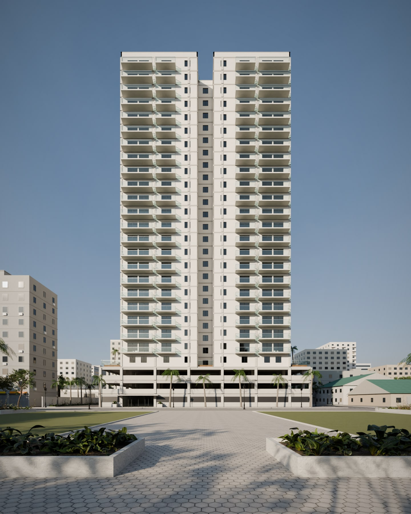

Tours de logements
Tours R+18 et R+23 : appartements, terrasses, structure et circulations verticales étudiées pour la hauteur.
Architecture
Maisons, immeubles, écoles et bâtiments d’activité : plans, structure, lots techniques, rendus et métrés.
Tours R+18 et R+23 : appartements, terrasses, structure et circulations verticales étudiées pour la hauteur.
Immeubles R+5 organisés autour d’une cour, avec piscine et espaces partagés, à l’abri de la rue.

Écoles R+2 aux classes lumineuses et ventilées naturellement, avec cour de récréation et hall d’accueil.
Maisons R+1 ouvertes sur le jardin : patios, terrasses et protection solaire pensés pour le climat chaud et humide de la RDC.

Maisons R+2 sur parcelle étroite : trois niveaux de vie et une terrasse en toiture.
Séjours, cuisines et chambres aménagés dans la maquette, pour voir les espaces avant de construire.

Agences bancaires et locaux recevant du public : hall clients, sûreté, guichets automatiques et lots techniques complets, livrés prêts à construire.

Usines et ateliers en béton préfabriqué : hall de production, stockage, quai d’expédition et circulations camions et piétons séparées.
Plans, structure en béton armé, réseaux et quantités sont tirés de la même maquette numérique. Chaque projet est livré prêt à consulter les entreprises et à lancer le chantier.
Bâtiment industriel — Fabriquer à Kinshasa. Parcelle 57,5 × 26 m, 1 495 m².
Logements collectifs — Vivre autour d’une cour. R+5 sur sous-sol.
Tour de logements — Une piscine sur le toit. 172 logements.
Tour de logements — Habiter au-dessus de la ville. 100 logements.
Équipement scolaire — Apprendre en pleine lumière. 170 places d’élèves.
Maison de ville — Habiter sur trois niveaux. Sous-sol + R+2 + toit-terrasse.
Villa — Ouvrir la maison sur le jardin. RDC + étage.
Villa — Recevoir en grand. Sous-sol + RDC + étage.
Agence bancaire — Une agence prête à construire. Plain-pied, 329 m² utiles.